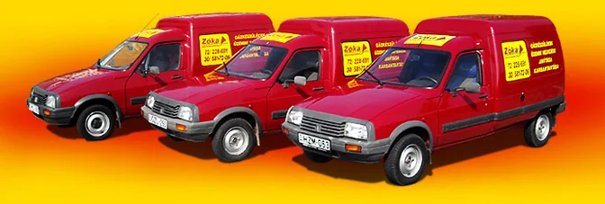

Gázkészülék-javítás és karbantartás Pécsen és Baranyában
Gázkazán, gázbojler, átfolyós vízmelegítő és gázkonvektor üzembe helyezése, javítása és karbantartása. Három szervizautónkkal Baranya megye egész területére kimegyünk, és több mint 40 gázkészülék-típus alkatrésze azonnal rendelkezésre áll a raktárunkban.
Amit a gázkészülékével vállalunk
Háztartási gázkészülékek üzembe helyezésével, felülvizsgálatával, javításával és karbantartásával foglalkozunk. A munkához elengedhetetlen szakvizsgákkal rendelkezünk.
Üzembe helyezés
Új gázkészülék bekötése és beüzemelése, a végén rövid tájékoztatással a használatáról.
Felülvizsgálat
A gázszivárgás, a füstgáz-visszaáramlás és a biztonsági berendezések ellenőrzése.
Javítás
Gyors hibaelhárítás: több mint 40 gázkészülék-típus javításához tartunk alkatrészt raktáron.
Karbantartás
Égőtisztítás, vízkő- és iszapmentesítés, műszeres beszabályozás, évente vagy a készülék szerint.
Mit igényel a készüléke?
A rendszeres karbantartás a biztonság mellett megnöveli a gázkészülék élettartamát, és csökkenti a gázszámlát.
Válassza ki a készülékét, és hogy mikor volt utoljára karbantartva. Megmutatjuk, mi esedékes most, és egy gombnyomással időpontot is kérhet rá.
A vízkő- és iszapmentesítést speciális vegyszerrel végezzük, ami nem károsítja a réz hőcserélő, a bojler és a kazán belső felületét.
Kimegyünk, és az alkatrész is velünk jön
A gyors hibaelhárítás nálunk nem ígéret, hanem felszereltség kérdése.
- 3szervizautóBaranya megye egész területén biztosítjuk a gyors hibaelhárítást.
- 40+gázkészülék-típus alkatrésze raktáronA javításhoz szükséges alkatrész azonnal rendelkezésre áll.
- 11szakképesítésGázvezeték- és készülékszerelő mestertől a villamos biztonságtechnikai felülvizsgálóig.
Szerepelünk a Bosch és a Riello szervizpartnerei között, és tagjai vagyunk a Gázközösségnek.

A három Zóka-szervizautó
Ügyelet hétvégén is
Aki a nyári akcióban rendeli meg gázkészüléke karbantartását, annak a téli szezonban a hét minden napjára javítási ügyeletet biztosítunk.
Gázszerviz Pécsen, 2008 óta
A Zóka Szerviz Kft. háztartási gázkészülékek üzembe helyezésével, felülvizsgálatával, javításával és karbantartásával foglalkozik.
A piaci elvárásoknak és a szakmai elkötelezettségünknek megfelelően rendszeresen részt veszünk szakmai továbbképzéseken és konferenciákon. Munkánk során elsődleges szempont, hogy ügyfeleinknek minőségi szolgáltatást nyújtsunk, ehhez járulnak hozzá a képesítéseink.
Képesítéseink
- épületgépész technikus
- automatikai technikus
- gázvezeték- és készülékszerelő mester
- gázipari műszaki-biztonsági felügyelő
- központifűtés- és gázhálózat-szerelő
- gáz- és hőtermelő berendezés szerelő
- gáz- és olajtüzelő berendezés minősítő, felülvizsgáló
- gáz- és olajtüzelő berendezés szerelő, üzembe helyező
- gáz- és olajtüzelő berendezés karbantartó, javító
- erősáramú-berendezés szerelő
- villamos biztonságtechnikai felülvizsgáló
Amit az ügyfeleink mondanak
183 Google-vélemény alapján
„Gyors, precíz – rendkívül segítőkész szolgáltató. Hosszú hétvégén is készségesen a segítségünkre állt.”Google-vélemény, 5 csillag
„Egy új gázkészüléket jött a szerelő bekötni. Gyors, pontos, precíz munkát végzett. A bekötés végeztével kaptam egy rövid tájékoztatót…”Google-vélemény, 5 csillag
„Pécsi, egész Baranyában házhoz mennek, nekem pozitív tapasztalatom van velük.”Ajánlás egy pécsi Facebook-csoportban
Kérjen időpontot
Írja meg, milyen készüléke van, és mire van szüksége. Visszahívjuk, és egyeztetjük az időpontot.
Gyakori kérdések
Ha nem talál választ, hívjon nyugodtan: 06 30 581 7206.
Milyen gyakran kell karbantartani a gázkazánt?
Évente: a gázégő és a hőcserélő tisztítása, a gázszivárgás, a füstgáz-visszaáramlás és a biztonsági berendezések ellenőrzése, valamint a műszeres beszabályozás. A fűtési rendszer iszaposodásától és a víz keménységétől függően legalább 4 évente iszap- és vízkőtelenítés is kell.
Milyen gyakran kell a gázbojlert vízkőteleníteni?
A gázégő tisztítása és a biztonsági ellenőrzés évente szükséges, a vízkő- és iszapmentesítés a víz keménységétől és a használattól függően legalább 3 évente.
Hol vállalnak munkát?
Pécsen és Baranya megye egész területén. A Zóka Szerviz Kft. három szervizautóval dolgozik, és több mint 40 gázkészülék-típus javításához tart alkatrészt raktáron.
Van hétvégi ügyelet?
Igen. Aki a nyári akcióban rendeli meg gázkészüléke karbantartását, annak a téli szezonban a hét minden napján 9–12 és 13–18 óra között javítási ügyeletet biztosítanak. Telefon: 06 30 581 7206.
Miért érdemes rendszeresen karbantartatni a gázkészüléket?
A biztonság mellett a rendszeres karbantartás megnöveli a gázkészülék élettartamát és csökkenti a gázszámlát. Egy elhanyagolt gázkazán akár napi 3–4 m³ gáz többletfogyasztást is okozhat.
Elérhetőség
- Cím
- Zóka Szerviz Kft., 7632 Pécs, Bogár u. 4.
- Mobil
- 06 30 581 7206
- Vezetékes
- 72/228-691
- info@zokaszerviz.hu
- Nyitvatartás
- A hét minden napján 9–12 és 13–18